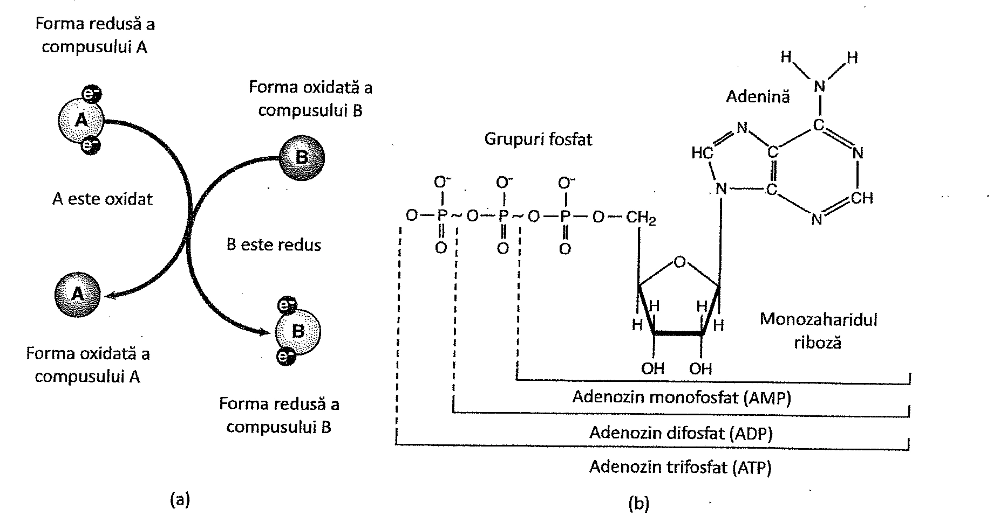
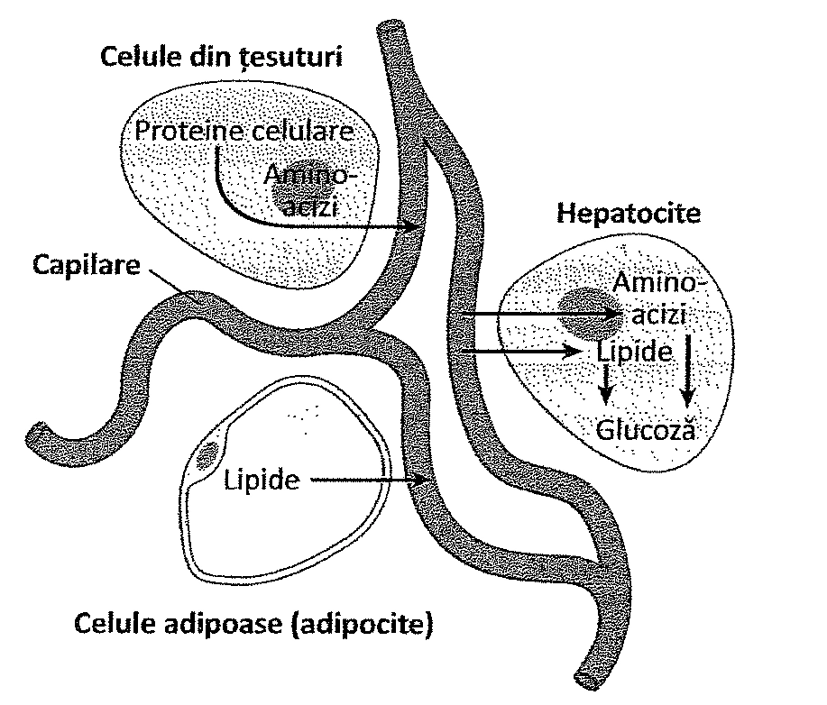
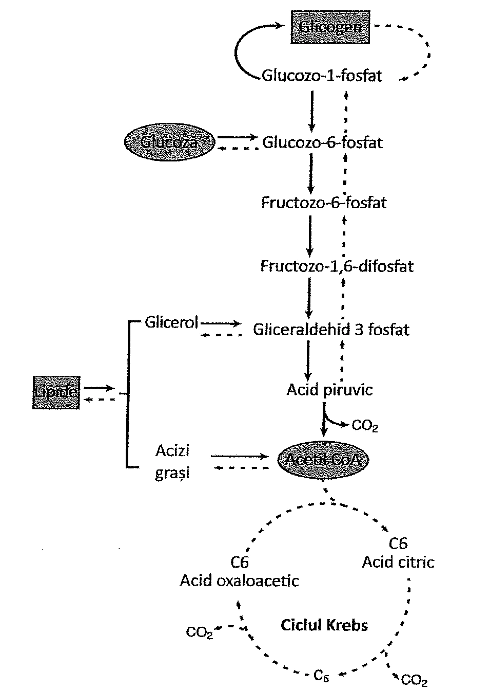
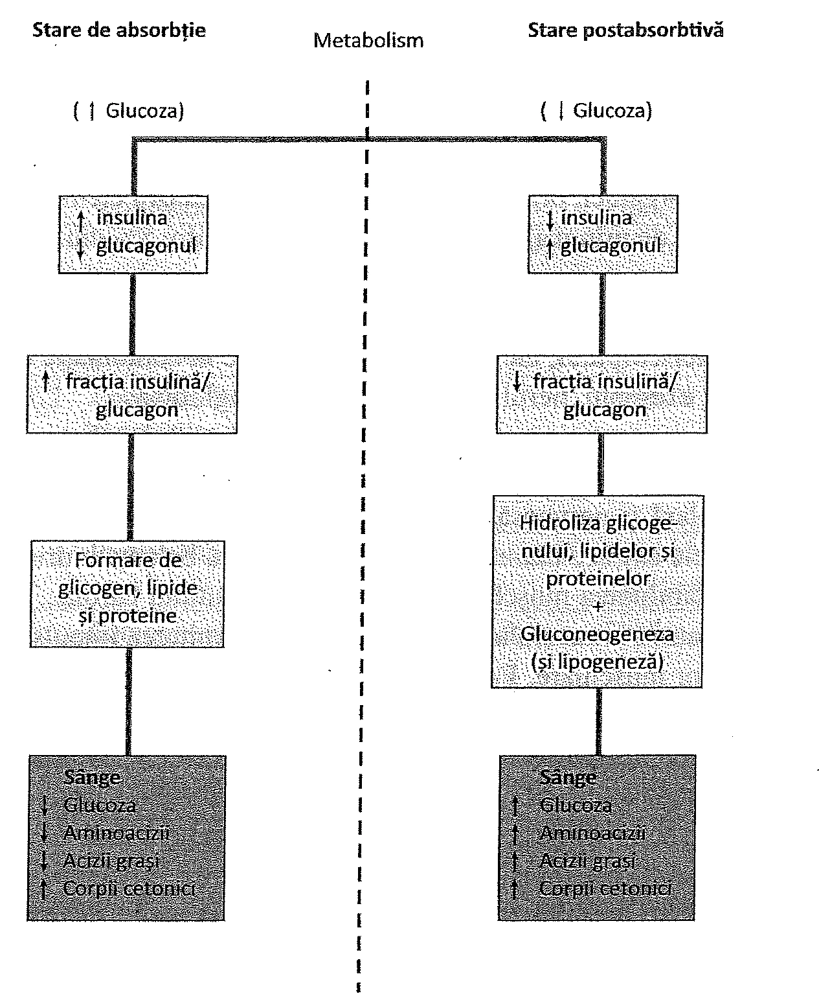

19. Metabolism și nutriție
Cuprinsul capitolului
- Metabolismul glucidelor
- Metabolismul lipidelor și al proteinelor
- Stări metabolice
- Metabolismul mineralelor
- Reglarea ratei metabolismului și a temperaturii
19. Metabolismul glucidelor
Metabolismul reprezintă totalitatea proceselor fizice și chimice care au loc în celulă. Principalele componente/căi ale metabolismului sunt anabolismul (sinteza moleculelor complexe) și catabolismul (degradarea moleculelor complexe). Reacțiile anabolice necesită de obicei energie, în timp ce reacțiile catabolice produc energie (Tabelul 19.1). Energia produsă este stocată în molecula cu nivel energetic ridicat, adenozin-trifosfatul sau ATP.
Reacțiile metabolice se desfășoară în general de-a lungul unei căi metabolice, care este o succesiune de reacții chimice prin care substraturile sunt descompuse în produși finali, prin intermediul activității enzimelor. Multe dintre reacții sunt de oxidare sau de reducere. Reacția de oxidare este acea reacție în care substratul cedează electroni și devine oxidat, iar reacția de reducere constă în acceptarea de electroni și substratul devine astfel redus (Figura 19.1). Fiecare reacție de oxidare este însoțită de una de reducere pentru că electronii nu pot exista în stare liberă. Oxidarea poate implica și eliminarea unui atom de hidrogen, în timp ce reducerea poate însemna și acceptarea unui atom de hidrogen.
Biochimia metabolismului este centrată pe sinteza și degradarea glucidelor (carbohidraților), lipidelor (grăsimilor), proteinelor și acizilor nucleici. Sinteza proteinelor din aminoacizi a fost discutată în Capitolul 3. Acest capitol se va axa pe degradarea glucidelor ca proces generator de energie, și pe metabolismul lipidelor și al aminoacizilor.

| Catabolism | Anabolism |
|---|---|
| Degradează molecule mari | Sintetizează molecule mari |
| Eliberează energie | Necesită energie |
| Rezultă molecule mici | Rezultă molecule mari |
| Glicoliză, ciclul Krebs, transport de electroni | Sinteză de glicogen, trigliceride și proteine |
| Mediat de enzime | Mediat de enzime |
| Reacțiile converg spre căile metabolice principale | Reacțiile diverg de la căile metabolice principale |
METABOLISMUL GLUCIDELOR
Glucoza este principala glucidă disponibilă ca sursă de energie în corpul uman. Alte glucide consumate de om sunt: fructoza, galactoza, zaharoza, lactoza, maltoza și amidonul, toate fiind transformate în glucoză sau într-un compus înrudit, pentru a fi folosite în metabolismul energetic.
În procesul respirației celulare, glucidele sunt preluate de către celulă în citoplasmă și mitocondrii pentru a le descompune și a elibera energie. În urma acestui proces, dioxidul de carbon și apa sunt eliminate ca produși reziduali. Procesul cuprinde patru etape: glicoliza, ciclul Krebs, lanțul transportor de electroni și chemiosmoza. Prin glicoliză moleculele de glucoză sunt transformate în acid piruvic; în ciclul Krebs moleculele de acid piruvic sunt degradate în continuare, iar energia din molecule este folosită pentru a forma compuși cu potențial energetic ridicat cum este NADH; prin lanțul transportor de electroni, electronii sunt transportați între citocromi și coenzime, eliberându-și energia; prin chemiosmoză, energia este folosită pentru pomparea transmembranară a protonilor și pentru a furniza energia pentru sinteza ATP-ului (Figura 19.2).
FIZIOLOGIA METABOLISMULUI GLUCOZEI
Moleculele de glucoză folosite în respirația celulară sunt absorbite din intestinul subțire în fluxul sanguin (Capitolul 18). Glucoza și alte monozaharide, ca fructoza și galactoza, sunt transportate la ficat prin vena portă. În ficat, fructoza și galactoza sunt transformate tot în glucoză, moleculele acesteia putând fi apoi transportate la toate celulele corpului pentru a fi utilizate în respirația celulară.
La nivelul membranei plasmatice celulare, hormonul insulină facilitează trecerea moleculelor de glucoză prin membrana celulelor, prin creșterea afinității transportorului membranar pentru moleculele de glucoză. În absența insulinei, pacienții dezvoltă tipul I de diabet zaharat sau insulino-dependent. În tipul II de diabet, celulele nu răspund la stimulul insulinic.
Moleculele de glucoză sunt stocate în ficat sub formă de glicogen, atunci când nivelul glucozei sanguine (glicemia) este ridicat. Procesul de formare a glicogenului se numește glicogenogeneză. Când nivelul glicemiei este scăzut, glicogenul este scindat și glucoza este eliberată în fluxul sanguin. Acest proces se numește glicogenoliză. Hormonii glucagon și epinefrină (adrenalină) accelerează glicogenoliza (produc hiperglicemie).
Moleculele de glucoză pot fi, de asemenea, sintetizate în ficat din surse neglucidice, altele decât glucidele. De exemplu, unii aminoacizi pot fi folosiți pentru sintetiza glucozei printr-un proces complex. Acest proces de sinteză a glucozei din anumiți aminoacizi se numește gluconeogeneză (Figura 19.8). De asemenea, moleculele de glicerol și acid lactic pot fi transformate în glucoză prin gluconeogeneză.

19. Metabolismul lipidelor și al proteinelor
METABOLISMUL LIPIDELOR ȘI AL PROTEINELOR
În procesul digestiei, trigliceridele (lipide) sunt descompuse în molecule de acizi grași și glicerol. În mucoasa intestinală, lipidele și proteinele formează chilomicroni, care sunt picături microscopice de materie grăsoasă ce intră în capilarele limfatice și în cele din urmă în circulația sanguină. Chilomicronii sunt compuși din trigliceride, colesterol și fosfolipide.
Majoritatea chilomicronilor sunt captați din sânge de către ficat și țesutul adipos. Enzimele, numite lipaze, descompun trigliceridele și eliberează moleculele de acizi grași liberi și glicerol. Unele dintre aceste molecule sunt recombinate pentru a fi depozitate în țesutul adipos, iar altele sunt metabolizate în ficat, în funcție de cantitatea de lipide ingerată prin dietă.
Pentru a fi transportați la celule, mulți acizi grași sunt legați de molecule de albumină în plasma sanguină. Moleculele de lipide sunt transportate, de asemenea, și ca mici particule ce conțin proteine, numite lipoproteine. Lipoproteinele sunt împărțite în trei clase în funcție de densitatea lor. Lipoproteinele cu densitate foarte mică (very low density lipoproteins VLDL) conțin aproximativ 60% trigliceride și 15% colesterol. Lipoproteinele cu densitate mică (low density lipoproteins LDL) au aproape 50% colesterol, în funcție de consumul alimentar de colesterol și lipide saturate. Un nivel ridicat de LDL semnifică mult colesterol în sânge și un risc crescut de boli coronariene. Lipoproteinele cu densitate mare (high density lipoproteins HDL) conțin aproximativ 20% colesterol, circa 5% trigliceride și circa 50% proteine. Aceste lipoproteine transportă colesterolul la ficat pentru a fi metabolizat și elimină trigliceridele și colesterolul din sânge. O concentrație mare de HDL este asociată cu un risc mai scăzut de boală coronariană.
CATABOLISMUL LIPIDELOR
Lipidele sunt descompuse la nivel celular și folosite ca o sursă importantă de energie. În procesul de degradare, molecula de glicerol este separată de acizii grași. În citoplasma celulei, enzimele convertesc glicerolul în dihidroxi-aceton-fosfat (DHAP). DHAP este un compus intermediar în procesul glicolizei (Figura 19.3), metabolizarea DHAP continuând până la acid piruvic. Alternativ, molecula de DHAP poate urma o cale care va duce retrograd căii glicolizei, înapoi la glucoză. În acest mod, glicerolul poate fi folosit pentru a sintetiza molecule de glucoză.
Acizii grași sunt metabolizați în mitocondria celulei. Aici, ei sunt convertiți în fragmente de câte 2 unități de carbon (acetil-CoA), printr-un proces cunoscut ca beta-oxidare. O singură moleculă de acid gras, conținând 16 atomi de carbon va duce la formarea a opt molecule de acetil-CoA. Fiecare moleculă de acetil-CoA intră apoi în ciclul Krebs (ca și cum ar fi provenit din acid piruvic) și este metabolizată pentru a-și elibera energia. Astfel, energia produsă prin metabolizarea unui acid gras cu 16 atomi de carbon este considerabilă, de circa 129 de molecule de ATP.
În timpul catabolismului lipidelor, unele molecule de acetil-CoA se pot combina între ele formând acidul acetoacetic. Această substanță este apoi convertită în molecule de acetonă și molecule de acid beta-hidroxi-butiric. Aceste molecule poartă numele de corpi cetonici (sau cetone) deoarece conțin grupări „ceto” (—C=O). În condiții normale, nivelul corpilor cetonici rezultați din catabolismul lipidelor este scăzut, deoarece aceștia sunt rapid convertiți în acetil-CoA. Însă, atunci când catabolismul lipidelor este accelerat, ca de exemplu la o persoană cu diabet zaharat, se formează o cantitate mare de corpi cetonici, situație cunoscută sub numele de cetoacidoză. Acetona din corpii cetonici produce mirosul caracteristic, de diluant de lac de unghii, al respirației pacientului. Excesul de corpi cetonici crește aciditatea corpului, condiție ce poate determina coma diabetică. Cetoacidoza apare, de asemenea, și în situații de înfometare, când aportul de glucoză este mult redus. O dietă bogată în lipide și săracă în glucide poate, de asemenea, să cauzeze cetoacidoză.
ANABOLISMUL LIPIDELOR
Sinteza lipidelor în cadrul anabolismului se produce din moleculele de acetil-CoA (Figura 19.9). Moleculele de acetil-CoA folosite în sinteză sunt în general obținute din molecule de glucoză, astfel asigurând un mecanism de conversie a moleculelor de glucoză în acizi grași. Enzimele hepatice sunt capabile să transforme un acid gras în altul și să formeze trigliceridele din lipide. Organismul nu poate sintetiza trei acizi grași nesaturați: acidul linolenic, linoleic și arahidonic. Acești acizi grași trebuie obținuți prin dietă și se numesc acizi grași esențiali.
Când dieta este bogată în glucide, glucoza este convertită în lipide prin procesul numit lipogeneză. Unii aminoacizi pot fi, de asemenea, convertiți în lipide prin intermediarii respirației celulare. În acest mod, lipidele în organism pot proveni fie din glucide, fie din proteine.

Un reglator important al metabolismului lipidic este insulina, care previne degradarea lipidelor prin inhibarea enzimelor numite lipaze. Această inhibiție este anulată în condițiile deficitului de insulină, cum este cazul persoanelor cu diabet zaharat.
Alți hormoni stimulează eliberarea acizilor grași din țesutul adipos; aceștia includ epinefrina (adrenalina), hormonul de creștere, glucagonul, ACTH-ul și tiroxina. Impulsurile nervoase ale sistemului nervos simpatic accelerează degradarea lipidelor în țesutul adipos, în timp ce impulsurile parasimpatice cresc depunerea lipidelor.
METABOLISMUL PROTEINELOR
În organism, proteinele sunt degradate în tractul gastrointestinal în aminoacizii lor componenți. Aminoacizii sunt apoi absorbiți din intestin prin mecanismele de transport activ sau difuziune facilitată și sunt transportați la ficat. Aici, ei pot fi integrați în molecule de proteine sau eliberați în circulație pentru a fi transportați la alte celule. În celule, aminoacizii sunt legați împreună într-o anumită secvență, care reflectă codul genetic din ADN-ul celulei. Procesul sintezei proteinelor este discutat în Capitolul 3.
Organismul poate utiliza unii aminoacizi ca surse de energie. Transformarea aminoacizilor în compuși energetici are loc în ficat, mai ales atunci când dieta este bogată în proteine. Procesul de transformare începe cu o etapă numită dezaminare. În această reacție chimică, gruparea amino (-NH₂) este desprinsă din aminoacid de către enzima dezaminază și este folosită pentru a forma o moleculă de amoniac. Molecula de amoniac trece apoi printr-o serie ciclică de reacții enzimatice numite ciclul ureei, unde se unește cu molecule de dioxid de carbon pentru a forma ureea. Ureea ajunge în sânge și este eliminată de către rinichi (Capitolul 20).
După ce gruparea amino a fost înlăturată prin dezaminare, în locul acesteia, este adăugat un atom de oxigen (Figura 19.10). Rezultatul este un compus care în mod normal se regăsește undeva în secvența metabolică a glicolizei sau a ciclului Krebs. Această moleculă poate fi utilizată pentru a obține energie în procesul respirației celulare. Alternativ, aceasta poate fi utilizată pentru a forma molecule de acetil-CoA, care pot fi folosite pentru sinteza de acizi grași în procesul lipogenezei. De obicei, proteinele sunt folosite ca surse de energie numai după ce s-au epuizat glucidele și lipidele.
Există anumiți aminoacizi pe care organismul îi poate sintetiza prin transformarea unui aminoacid în altul în ficat, prin procesul de transaminare. Aceștia sunt aminoacizii ne-esențiali. Unsprezece aminoacizi sunt ne-esențiali. Aminoacizii esențiali sunt aceia care trebuie obținuți din dietă. Aceștia includ: triptofanul, valina, lizina, leucina, izoleucina, metionina și histidina. Proteinele animale pot conține acești aminoacizi și sunt considerate proteine complete. Din proteinele vegetale lipsesc frecvent unii din acești aminoacizi, aceste proteine numindu-se proteine incomplete.
Metabolismul proteinelor este reglat de o serie de hormoni, inclusiv de hormonul de creștere, care stimulează transportul activ al aminoacizilor în celule și folosirea lor de către celule în sinteza proteinelor. Hormonul sexual masculin, testosteronul, și cei feminini, estrogenii, stimulează, de asemenea, sinteza proteică și produc creșterea depozitelor de proteine din țesuturi. Tiroxina crește rata metabolismului celular și influențează sinteza proteinelor, iar glucocorticoizii favorizează degradarea proteinelor în celule.
19. Stări metabolice și metabolismul mineralelor
STĂRI METABOLICE
Organismul uman se poate afla în două stări metabolice diferite. După consumul unui prânz, organismul este în stare de absorbție (postprandială), când substanțele nutritive sunt absorbite din tractul gastrointestinal în circulația sanguină. Când aceste procese de absorbție s-au încheiat, organismul intră în stare postabsorbtivă (de post) (Figura 19.11). În această fază, necesitățile organismului sunt acoperite doar din substanțele prezente în corp.
În starea de absorbție, nivelul de insulină este ridicat, organismul transportă moleculele de glucoză în celule și le utilizează ca sursă principală de energie. Organismul depozitează excesul de glucide ca și lipide și glicogen. Ficatul convertește excesul de glucide în grăsime sau glicogen, și eliberează cea mai mare parte a lipidelor în circulația sanguină pentru a fi transportată la celulele țesutului adipos. De asemenea, organismul folosește aminoacizi pentru sinteza proteinelor și stochează excesul de aminoacizi tot sub formă de lipide, în timp ce o parte din exces îl transformă în glucide.

În timpul stării postabsorbtive, nivelul glucagonului este ridicat și organismul menține nivelul glucozei sanguine în homeostazie. Sursele de glucoză sunt suplimentate, prin căi metabolice care implică degradarea lipidelor și a glicogenului în ficat. Catabolismul lipidelor și al aminoacizilor aduce, de asemenea, aport de compuși energetici. În perioadele de post prelungit, organismul folosește în scop energetic proteinele musculare care nu sunt esențiale pentru funcționarea celulară.
În cursul acestei stări, aproape toate țesuturile și organele depind în primul rând de lipide ca sursă de energie. Acest lucru economisește glucoza, pentru ca ea să fie folosită cu predilecție de către sistemul nervos, care în mod normal utilizează glucoza ca principală sursă de energie. Ficatul folosește, de asemenea, acizi grași, economisind astfel aminoacizii săi pentru a-i folosi în sinteza glucozei. Ca rezultat al acestor adaptări, o persoană poate supraviețui fără aport alimentar multe zile, în condițiile unei hidratări corespunzătoare.
ALTE ASPECTE ALE METABOLISMULUI
Conceptul vast al metabolismului include utilizarea de către organism a vitaminelor și a mineralelor, precum și mecanismul prin care este reglată temperatura corporală.
METABOLISMUL MINERALELOR
Pe lângă compușii organici, organismul are nevoie și de câteva elemente anorganice cunoscute sub numele de minerale. Ele constituie aproximativ 5% din greutatea corporală și pot avea funcții importante cum sunt reglarea diferitelor procese în organism, precum și rolul de a asista activitatea unor enzime. Mineralele mențin, de asemenea, presiunea osmotică a fluidelor corpului; ele sunt frecvent regăsite în combinație cu compuși organici, cum este, de exemplu, fierul în molecula de hemoglobină.
Calciul este important pentru formarea dinților și a oaselor. Este cel mai des întâlnit element mineral din organism și este necesar pentru coagularea sângelui și pentru activitatea musculară și nervoasă normală. Sodiul este cel mai des întâlnit ion pozitiv (cation) din fluidele extracelulare. Este important pentru balanța hidrică a organismului și are rol în excitabilitatea mușchilor, nervilor și a țesutului cardiac. Potasiul este cel mai des întâlnit cation intracelular și influențează transmiterea impulsurilor nervoase și contracția celulelor musculare. Fosforul este folosit în formarea oaselor și a dinților și ca un component al ATP-ului și acizilor nucleici.
Alte minerale, ca magneziul sunt folosite pentru funcția nervilor și a celulelor musculare și în formarea osului. El este, de asemenea, component al multor enzime. Fierul este un component al mioglobinei, al hemoglobinei și al citocromilor folosiți în transportul electronilor. Iodul este folosit de glanda tiroidă pentru producția tiroxinei și a altor hormoni implicați în controlul metabolic. Sulful face parte din structura anumitor aminoacizi și este găsit în diverse vitamine precum și în citocromi. Cuprul este utilizat în producția hemoglobinei și a pigmentului melanină. Zincul este constituentul mai multor enzime și este esențial pentru creșterea normală. Manganul participă la formarea ureei în ciclul ureei și este un activator enzimatic. Cobaltul este un component al vitaminei B₁₂ și are rol în procesul maturării eritrocitelor.
19. Rata metabolică și temperatura corporală
RATA METABOLICĂ
Rata metabolică reprezintă măsurarea energiei cheltuite de organism într-o perioadă de timp. Rata metabolică se măsoară în general când organismul este în repaus și nemâncat. În aceste condiții, nu se stochează energie și singura activitate efectuată de organism este activitatea internă. Consumul energetic al organismului este proporțional cu căldura produsă de organism.
Producția de căldură a corpului poate fi măsurată direct sau indirect. Pentru măsurarea directă se folosește un dispozitiv numit calorimetru. Acest dispozitiv constă într-o cameră izolată în care este plasat subiectul. Căldura produsă de subiect încălzește aerul din cameră și se va măsura rata creșterii temperaturii. Metoda indirectă de măsurare a producției de căldură de către corp constă în măsurarea ratei consumului de oxigen de către organism.
În scopuri comparative, ratele metabolice se măsoară adesea în condiții postabsorbtive (de post), în condiții standard concepute pentru a elimina cele mai multe variabile. În aceste condiții, rata metabolismului bazal (RMB) este consumul de energie pe unitate de timp și pe kilogram corp în condiții bazale. RMB reprezintă energia minimă necesară pentru respirație, circulație, digestie și alte activități ale corpului în stare de veghe. RMB este influențată de hormoni (de exemplu hormonii tiroidieni care cresc metabolismul celular), de dimensiunea și suprafața corporală (dimensiune corporală mai mare - RMB scăzută), vârstă (RMB crescută în copilărie), sex (bărbații au o RMB ușor mai crescută decât femeile) și de temperatura corporală (RMB crescută în caz de temperatură crescută).
După ingerarea unui prânz tipic, metabolismul crește cu 10-20 de procente. Această accelerare a metabolismului se numește efect termic al alimentelor. Efectul proteinelor este mai mare decât al glucidelor sau lipidelor, de aceea un prânz bogat proteic crește ușor rata metabolică datorită procesării ceva mai intense a acestor nutrienți de către organism.
Când valoarea energetică a alimentelor ingerate este egală cu energia cheltuită în decursul activității organismului, greutatea corporală rămâne constantă. Valoarea energetică a alimentelor se măsoară în kilocalorii/gram. O kilocalorie este cantitatea de căldură necesară pentru a crește temperatura unui gram de apă cu 1°C.
REGLAREA TEMPERATURII CORPORALE
Corpul uman produce propria cantitate de căldură și își menține constantă temperatura. Temperatura normală, măsurată matinal în condiții standard în cavitatea orală, este de aproximativ 36,7°C sau 98,6° F. Poate varia în funcție de activitatea persoanei, perioada din zi și locația unde se măsoară temperatura.
Temperatura corporală este rezultatul producerii de căldură în decursul metabolismului și al pierderii de căldură. Câteva mecanisme contribuie la pierderea de căldură a corpului înspre mediul înconjurător. Unul din acestea este radiația, un proces prin care căldura este pierdută sub forma radiațiilor infraroșii. Un alt mecanism este evaporarea din timpul transpirației și perspirației. Un al treilea mecanism, conducția, este procesul prin care energia este transferată de la atom la atom în urma contactului direct dintre două obiecte. Acest transfer apare între suprafața corpului uman și diferite obiecte din mediul înconjurător, cum ar fi aerul sau apa. Al patrulea mecanism, convecția, apare când moleculele de aer ating corpul și primesc căldura prin conducție. Apoi, aceste molecule sunt îndepărtate și sunt înlocuite de alte molecule care la rândul lor primesc căldură de la suprafața corpului. Procesul aduce constant alte molecule de aer sau apă în contact cu corpul. Curenții de aer, cum este vântul, accentuează acest proces.
Reglarea temperaturii corporale depinde în mare parte de activitatea centrului termoreglator din hipotalamus. Neuronii din hipotalamus funcționează ca un termostat. Când temperatura corpului scade sub o anumită valoare setată (ce reprezintă temperatura normală), centrul hipotalamic transmite impulsuri pentru conservarea căldurii în corp, iar când temperatura în organism se ridică peste valoarea setată, centrul trimite impulsuri pentru a facilita pierderile de căldură.
Stimulii aferenți către centrul hipotalamic sunt generați de receptorii de temperatură din piele și unele mucoase. Aceștia sunt numiți receptorii termici periferici. Alți receptori din hipotalamus numiți receptorii termici centrali detectează, de asemenea, modificări ale temperaturii sângelui. Receptori termici centrali se găsesc și în măduva spinării, organele abdominale și alte structuri interne.
Febra este o creștere a temperaturii corporale peste nivelul normal, rezultat al unui stress fiziologic, cum este reacția alergică sau inflamația. Substanțele numite pirogene acționează asupra hipotalamusului și setează termostatul la temperaturi mai înalte. Tremurăturile, vasoconstricția și frisoanele reflectă încercarea organismului de a atinge acele temperaturi înalte prin conservarea căldurii. Când substanțele pirogene nu mai își exercită efectul, febra dispare, transpirația și vasodilatația produc pierdere de căldură și temperatura corpului revine la nivelul normal.